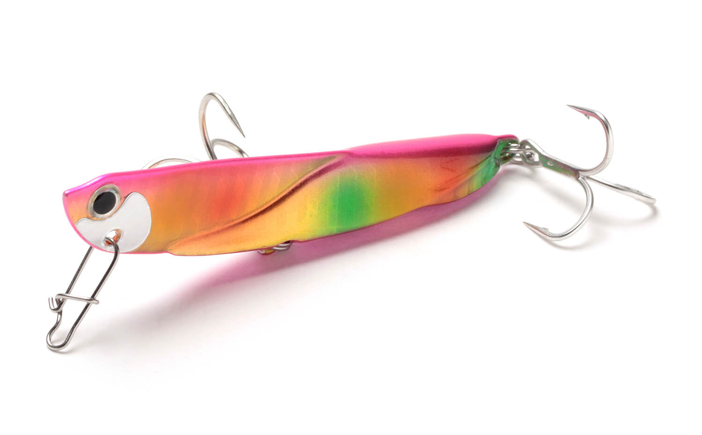
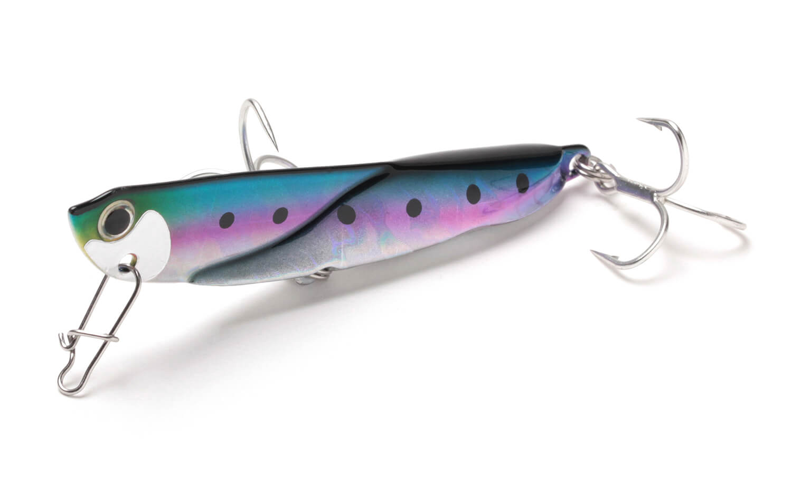
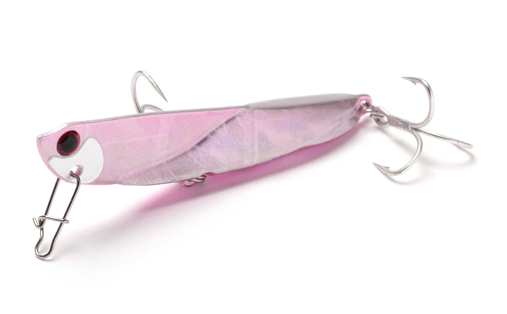
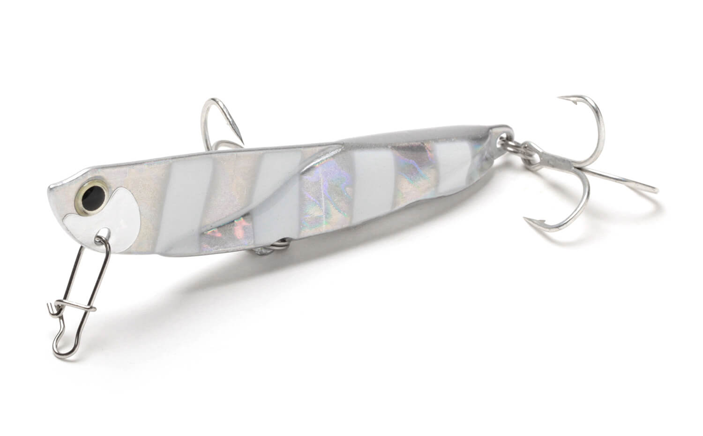

飛び過ぎダニエル
（Tobisugi Daniel）
飛び過ぎダニエルはJackson（ジャクソン）のメタルジグです。
その名のとおり、自重の数値から想像する以上に飛ぶのが最大の特徴。サーフ・港湾・河川・磯とフィールドを選ばず、ヒラメやシーバス、マゴチ、青物など、ほぼすべての中型フィッシュイーターを狙えます。

画像出典:Jackson公式HP
スペック
- メーカー
- Jackson（ジャクソン）
- タイプ
- メタルジグ
- 重さ／全長
- 14g／61mm、20g／67mm、30g／80mm、40g／83mm
- フック
- フロント（腹部）・リアにトレブルフック
- ターゲット
- ヒラメ・マゴチ・シーバス・青物など
- 価格
- 1,155円（14g）〜1,430円（40g）（税込）
▼今すぐチェック
飛び過ぎダニエルの特徴
自重以上に飛ぶ、オールレンジ対応のメタルジグ
-
自重から想像する以上の飛距離
「距離は出したいけど浅い」「距離は出したいけどベイトが小さい」など、欲しい飛距離とレンジ・ベイトサイズが合わない場面でも、軽めのウエイトで遠くまで届けられます。
-
激しいワイドウォブリング
アクションはかなり激しいワイドウォブリングで、水中での存在感は抜群。魚影が薄いときでも広い範囲の魚に気づかせます。フリーフォールでは素早くボトムを取り、カーブフォールではローリングしながら誘います。
-
腹部にもトレブルフック
後ろからのバイトだけでなく、下から突き上げるバイトや横から回り込むバイトにも対応できるよう、テールに加えて腹部にもトレブルフックを付けています。
飛び過ぎダニエルの使い方
サーフでは遠投してボトムを取り、ただ巻きで底から少し上を引くのが基本。反応がなければ、巻きの途中でカーブフォールを入れて、ローリングしながら落ちる動きで誘います。
青物狙いではボトムを取ってからのワンピッチジャークや早巻きも効果的です。
飛び過ぎダニエルの得意な状況
遠浅のサーフで沖のブレイクまで届けたいとき、向かい風で飛距離が落ちる日、ベイトが小さくて重いジグを使いにくいとき。サーフのヒラメ・マゴチから、堤防・磯の青物、河口のシーバスまで幅広く使えます。
ワンポイント
「飛び過ぎダニエル選手権」という飛距離検証の動画があるほど飛距離にこだわったジグです。いつものジグより一段軽いウエイトで同じ距離が出せるので、浅い場所ではウエイトを下げて根掛かりを減らすのも手です。
重さの使い分け
| 重さ | 全長 | 使いどころ |
|---|---|---|
| 14g | 61mm | 港湾・河口のシーバスや、浅いサーフでのライトなヒラメ狙いに |
| 20g | 67mm | サーフ・堤防の基準。ライトショアジギングにも |
| 30g | 80mm | サーフのヒラメ・マゴチの定番ウエイト。遠投したいときに |
| 40g | 83mm | 向かい風や水深のある場所、青物狙いに |
ほかに1g・3g・5gの小型サイズや、ブレード付きの「飛び過ぎダニエル ブレード」、強化フック仕様もあります。ターゲットと水深に合わせて選びましょう。
人気カラー
全17色のラインナップから4色を紹介します（カラー名は公式の表記のまま。重さによって無いカラーもあります）。

SGR ゴールドレインボーゴールドにレインボーのホロ。朝マヅメや濁りのある日のアピールに。

LIW ライブイワシイワシを意識したリアル系。澄み潮の日中や、イワシがベイトのときに。

WHE ヒラメノエサその名のとおりヒラメ狙いを意識したカラー。サーフのフラットフィッシュゲームに（30g・40g）。

ZBG ゼブラグローシルバーにグローのゼブラ模様。夜明け前や曇りの日、濁り潮に。
画像出典:Jackson公式HP
飛び過ぎダニエルに似ているルアー
-
 フリッパー32
DUO
詳細はこちら＞
フリッパー32
DUO
詳細はこちら＞
70mm・32gのサーフ用メタルジグ。同じクラスのサイズで、ローテーションの1本として。
-
 メタルマジックTG
アクアウェーブ
詳細はこちら＞
メタルマジックTG
アクアウェーブ
詳細はこちら＞
タングステンのメタルジグ。同じ重さで、もっとシルエットを小さくしたいときに。
-
 シーライド
ブルーブルー
詳細はこちら＞
シーライド
ブルーブルー
詳細はこちら＞
20〜60gのメタルジグ。青物狙いでジャークを多用したいときに。